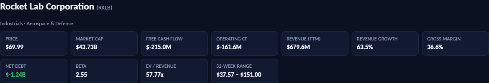
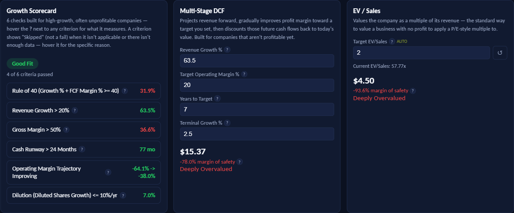

How to Value a Growth Stock That Isn't Profitable Yet
A note on authorship: The research, analysis, and opinions in this article are the author's own. Claude (Anthropic's AI) assisted with drafting and editing the prose.
Run a company like Rocket Lab, Rivian, or Palantir through a traditional value-investing checklist and it fails almost everything on the list. No meaningful P/E, because there are no meaningful earnings. No dividend. Free cash flow that is negative, sometimes deeply so. A discounted cash flow model built for mature, cash-generative businesses doesn't just value these companies poorly — it can't value them at all, because the inputs it expects don't exist yet.
That doesn't mean the company is bad. It means the checklist is wrong for the job. The Growth Stock Evaluator uses a different set of checks, built specifically for companies that are still spending more than they earn in the hope of earning a lot more later. This article explains what each check measures, how the tool's two valuation models work, and walks through a live worked example — Rocket Lab (RKLB) — end to end, including what the numbers deliberately don't tell you.
The short version:
- Traditional scorers assume positive earnings and cash flow. Growth companies fail that by construction — a different scorecard is needed, not a harsher one.
- The Growth Scorecard checks six things: Rule of 40, revenue growth, gross margin, cash runway, margin trajectory, and dilution.
- Two independent valuation models — multi-stage DCF and EV/Sales — estimate a per-share value without needing positive free cash flow to start from.
- The scorecard and the valuations can — and often do — disagree. That disagreement is informative, not a bug.
- Every valuation output is a range built from assumptions you can edit, not a price target.
Why the usual checklists don't work here
A Buffett-style scorecard checks things like return on equity, debt-to-equity, and a track record of rising earnings per share. A Graham-style scorecard wants a low P/E and P/B. A dividend discount model needs, at minimum, a dividend. All three assume the company has already found a profitable, repeatable way of making money and is simply continuing to do it.
A company still in its growth-investment phase — spending heavily on R&D, sales capacity, or manufacturing scale-up before the revenue catches up — has none of that yet. Scoring it against those frameworks mostly measures the distance between "growth company" and "mature company," which every growth company fails by definition. The Growth Stock Evaluator instead asks growth-appropriate questions: is the growth fast enough to matter, is the cash burn sustainable, and is the business getting closer to or further from profitability.
The Growth Scorecard: six checks
Six criteria, each pass/fail against a fixed threshold (two are skipped rather than scored when they don't apply — skipped criteria are excluded from both the score and the maximum, so a company isn't penalised for a check that genuinely doesn't fit it).
| Criterion | Threshold | What it's really asking |
|---|---|---|
| Rule of 40 | Growth % + FCF margin % ≥ 40 | Is growth fast enough to justify the cash being burned? |
| Revenue growth | > 20% | Is this actually a growth company, or a slow one dressed up as one? |
| Gross margin | > 50% | A proxy for software-like unit economics — structurally lower for hardware, auto, and retail, and the tool expects that. |
| Cash runway | > 24 months | Months of cash left at the current burn rate before a capital raise or dilution becomes necessary. Skipped once free cash flow turns positive. |
| Margin trajectory | Latest > earliest | Is operating margin improving year over year, or drifting further from breakeven? |
| Dilution | Diluted shares growth ≤ 10%/yr | How much of your ownership stake is being sold to new shareholders to fund the business? |
The verdict — Strong Fit, Good Fit, Partial Fit, or Poor Fit — is the ratio of criteria passed to criteria scored, the same ratio-based convention used by the Buffett, Dalio, and Graham scorecards elsewhere on KashVector. It describes how healthy the growth looks by these six measures. It says nothing about price — that's a separate question, covered next.
Worked example: Rocket Lab (RKLB)
Rocket Lab builds and launches small orbital rockets and satellite components — a capital-intensive, pre-mature-profitability business, and a reasonable stress test for this tool. Here is its snapshot from the Growth Stock Evaluator on 24 July 2026:

Free cash flow and operating cash flow are both negative — normal for a company still scaling manufacturing and launch cadence — but net debt is negative $1.24B, meaning the company sits on more cash than debt. Revenue is growing 63.5% year over year. That combination is exactly what the scorecard is built to evaluate.

Scorecard: Good Fit, 4 of 6. Revenue growth (63.5%), cash runway (77 months — over six years at the current burn rate), margin trajectory (operating margin narrowed from −64.1% to −38.0% between the earliest and latest fiscal years available), and dilution (7.0% annual share growth, under the 10% ceiling) all pass. Rule of 40 fails — free cash flow of −$215.0M on $679.6M revenue is a −31.6% FCF margin, and 63.5% growth + (−31.6%) FCF margin nets to 31.9%, short of the 40 bar, because the cash burn is still large relative to revenue. Gross margin (36.6%) also fails the 50% software-style bar, which is expected and noted in the tool itself: aerospace hardware businesses are structurally lower-margin than SaaS, and this criterion isn't recalibrated by sector.
Multi-stage DCF: $15.37 intrinsic value, −78.0% margin of safety, Deeply Overvalued. The tool seeds the growth rate from RKLB's own trailing figure (63.5%), assumes operating margin ramps to a 20% target over 7 years, and applies a 2.5% terminal growth rate after that — all four are editable. Against a $69.99 share price, that produces a value less than a quarter of where the stock trades.
EV/Sales: $4.50 intrinsic value, −93.6% margin of safety, Deeply Overvalued. RKLB currently trades at 57.77x revenue. The tool's sector-median starting multiple for Industrials is just 2x — nowhere close. Even allowing that Industrials is a broad bucket that undersells a space-launch company's growth profile, the gap between 2x and 57.77x is the entire story here.
How the tool works: Multi-Stage DCF
A standard DCF starts from today's free cash flow and discounts it forward. That collapses immediately for a company like RKLB, where free cash flow is negative. The multi-stage DCF instead starts from revenue and today's operating margin (however negative), then does four things:
- Grows revenue at your chosen rate for a set number of years (the ramp years).
- Linearly improves operating margin from today's level toward a target operating margin you set, reaching it exactly at the end of the ramp.
- Approximates free cash flow each year as revenue × margin × (1 − tax rate) — a simplified proxy, not a full cash-flow build.
- Discounts everything back at a WACC computed automatically from CAPM (Yahoo's beta, a 4.5% risk-free rate, a 5.5% equity risk premium, blended with cost of debt) — this discount rate itself isn't a field you can override in this tool, only the four inputs above are.
The result is one number, but it rests on two assumptions that matter more than anything else: the target margin (what this business looks like once mature) and the years to get there. Push either one out further or higher and the valuation climbs quickly — which is exactly why the tool shows those two fields as editable, not fixed.
There's a second, less obvious sensitivity worth naming: in a multi-stage growth DCF, the terminal value — everything after the ramp years — typically accounts for 70–80% or more of the total, since the explicit forecast is short relative to how long the business will actually operate. That means RKLB's $15.37 figure is driven far more by the terminal growth rate and the WACC than by any single year of the seven-year ramp — a small change in either moves the result by a lot more than intuition suggests.
How the tool works: EV/Sales
When there's no profit to apply a P/E-style multiple to, the standard fallback is to value the business as a multiple of revenue instead. Enterprise Value ÷ Sales (EV/Sales) is that multiple. The tool pre-fills a target multiple from a sector-median starting point — 6x for Technology, 4x for Healthcare, 2x for Industrials, and so on down to 1.5x for Basic Materials and Energy — labelled "auto" and always editable, because it's reference data, not KashVector's view of what any specific company deserves.
Implied enterprise value is revenue × target multiple; subtract debt and add back cash to get implied equity value; divide by shares outstanding for a per-share figure. It's the simplest model in the tool, and also the bluntest — it says nothing about margins, growth durability, or capital intensity, only "what would this be worth at a normal-for-its-sector sales multiple." That bluntness is a feature when you want a sanity check that doesn't depend on forecasting seven years of margin expansion.
When the scorecard and the valuation disagree
Rocket Lab's result is a useful illustration of something the tool is deliberately built to show: the scorecard and the two valuation models are never blended into one number. They answer different questions, and a healthy "Good Fit" alongside two "Deeply Overvalued" verdicts isn't a contradiction to explain away — it's the tool doing exactly its job.
The scorecard asks whether the business is executing well as a growth company: is revenue growing fast, is the cash burn survivable, is the ownership stake being diluted responsibly. RKLB passes most of that. The valuation models ask a completely separate question: does today's $69.99 share price already assume a future good enough to justify it, using the seeded default assumptions? On those defaults, no — not by a wide margin.
That gap doesn't mean the market is wrong and the model is right, or vice versa. It means the market is pricing in something more aggressive than "63.5% growth for 7 years, ramping to a 20% margin" or "2x sales" — plausibly a longer growth runway, a higher terminal margin, dominant market share in a category still being defined, or simply a bet that a broad Industrials-sector multiple understates what a space-launch company is worth. The tool's job stops at making that gap visible and quantifiable. Deciding whether the market's more optimistic story is one you believe is the part that stays entirely yours.
Try it on your own stock Run the same scorecard and dual valuation → Growth Stock EvaluatorWhat this tool cannot tell you
Every simplification below exists to make a pre-profit company valuable at all — the alternative is refusing to value it, which isn't more honest, just less useful. Knowing where the simplifications sit tells you where to apply your own judgement.
The discount rate isn't yours to adjust. Unlike the KashVector DCF tool, WACC here is computed automatically from Yahoo's beta and fixed 4.5%/5.5% risk-free-rate and equity-risk-premium assumptions, with no international adjustment for non-US markets and no input field to override it. If you think RKLB's beta of 2.55 overstates or understates its real risk, the only way to express that view is indirectly, through the growth and margin inputs.
Free cash flow is a proxy, not a forecast. Revenue × margin × (1 − tax) ignores capital expenditure and working-capital swings entirely. For a capital-intensive manufacturer scaling up a new product line — Rocket Lab's Neutron rocket is a good example — CapEx and inventory build can dwarf the operating loss itself, so the real cash burn can run well ahead of what an operating-margin proxy implies. The multi-stage model can end up looking more optimistic than the real-world cash position, especially in the earlier ramp years — exactly when a capital-intensive scale-up is spending the most.
Dilution is scored, but not priced in. The scorecard checks whether shares outstanding are growing too fast, but the DCF divides by today's share count throughout the entire forecast. If a company keeps issuing 5–10% more shares every year to fund losses — as many pre-profit growth companies do — the true value per share a current holder ends up with is lower than the model shows, because the model never shrinks the ownership slice to account for it.
Gross margin and Rule of 40 were built for software. Both travelled from the SaaS world, where 50%+ gross margins and near-zero marginal cost are normal. Hardware, aerospace, and industrial companies fail the 50% gross-margin bar structurally, not because they're worse businesses — the tool flags this in its own notes but doesn't recalibrate the threshold by sector, so read a gross-margin fail on a hardware company differently than the same fail on a software one.
The EV/Sales starting multiple is a sector average, nothing more. A single number per GICS-style sector papers over enormous dispersion — the difference between a commodity industrial and a category-defining space company, both filed under "Industrials," is exactly the gap RKLB's example shows. Treat it as a floor to argue up from, not a fair-value estimate.
Margin trajectory and dilution need two data points that don't always exist. Both read from Yahoo's multi-year fundamentals feed. For newly listed or thinly covered companies, that history can be short, missing, or non-consecutive — when it isn't available, the criterion shows "Skipped," not a fail, and the scorecard's maximum shrinks accordingly rather than penalising the stock for a data gap.
The data itself is third-party and delayed. Every figure comes from Yahoo Finance, roughly 15 minutes behind live prices, with no accuracy guarantee. Treat every number as a starting point to verify, not a fact to build a decision on.
None of this is a recommendation to buy, hold, or sell anything — the tool's verdicts describe growth health and price-versus-assumptions, nothing more. Used well, it's a way to make your assumptions about a growth company's future explicit, and to see exactly how much the answer moves when you change them.
Free, no sign-up required Score and value a pre-profit growth stock → Growth Stock Evaluator Free, no sign-up required Once a company turns cash-flow positive, cross-check it → DCF Valuation